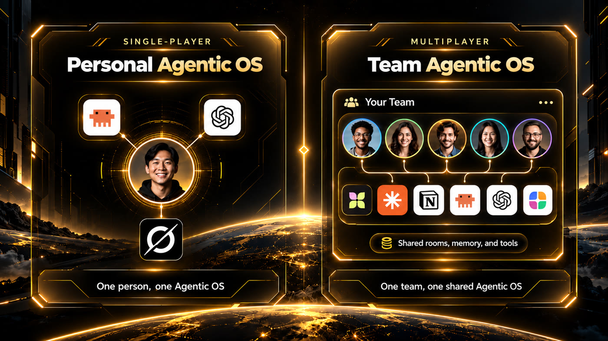
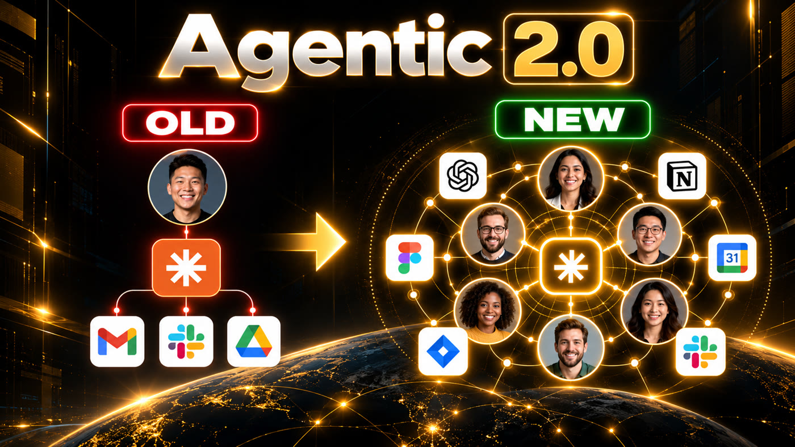

Sala Multiplayer is a small program that runs on your computer and puts you (or your team), two AI agents (Claude Code and Codex) and whoever writes to your Telegram bot into one conversation. It is for people who want to work with agents alongside other people, or to set up a support desk where the AI drafts and a human approves before the reply goes out. The agents run on your subscription, with no API. To use it, you need Node 24 and the Claude Code and Codex CLIs installed and logged in.
What it is
One conversation, many participants
First practical version of the Multiplayer Agentic concept: instead of each person talking to their own AI alone, everyone talks in the same place.
👥 People and agents together
Call @claude or @codex in the conversation. Both answer in the room, using your Claude Code and Codex subscriptions.
📱 Telegram as the door
A single bot receives the messages. The agents reply through it with their name in front ("Claude: ...").
✅ Human in control
In atendimento (support) mode, the reply to the customer becomes a draft and only goes out after someone on the team approves it.

Single-player × multiplayer: from one person and their agents to a team sharing rooms, memory and tools.

Agentic 2.0: before, each person wired to their own tools; now, people, agents and tools in the same space.
How it works
From Telegram to the dashboard, with a lock in the middle
Every message enters the room, goes to whoever was called and shows up on the dashboard right away.
Message (Telegram or dashboard)→Route: @mention or profile default→Agent (Claude or Codex)→Tool, if requested→Human approval (atendimento)→Reply in the room and on Telegram
Two ready-made profiles
pessoa (personal): you and your agents; the bot ignores anyone who is not the owner. atendimento (support): customers write on Telegram, Claude answers using the answer base, Codex reviews when the team asks, and a supervisor or agent approves.
Tools
The agent asks with one line FERRAMENTA: nome | entrada and the room runs it. Examples: base (answer base), chamado (ticket), notas (notes), hora (time).
Loop limits
Up to 4 turns in a row between agents (3 in atendimento) and a daily reply limit (150 in the pessoa profile, 300 in atendimento). Both keep you from wasting your subscription.
Security
The dashboard only opens on this machine (127.0.0.1). A message from another person is treated as data, never as an order. The agents run without the CLI's own tools, without MCP and in an empty folder.
Prerequisites
What needs to be installed
The demo runs on Node alone. For the real agents, both CLIs must be logged in to your account.
Node 24
The room uses the SQLite that already ships with Node (node:sqlite), with no dependencies to install.
# check the versionnode --version # v24 or higher
Claude Code and Codex
Installed and logged in with your subscription. The room calls both CLIs; it does not use an API key.
# both must respondclaude --version
codex --version
Telegram bot (optional)
Without a bot, the room works through the dashboard only. With a bot, you need the token from @BotFather.
# on Telegram@BotFather → /newbot
User guide · step by step
From the demo to a live bot
Start with the demo, which uses fake agents and costs nothing. Then turn on the real agents and, last, Telegram.
1
Download the project
There is no npm install: the project has no dependencies.
It opens the atendimento profile with fake agents, so you can see the three screens working.
npm run demo# open http://127.0.0.1:4601npm test# 11 tests, no agents or Telegram called
3
Turn on the real agents
Pick the profile. In the dashboard, write @claude or @codex to call an agent.
npm run pessoa# you and your agents → http://127.0.0.1:4600npm run atendimento# support desk → http://127.0.0.1:4600
4
Create the Telegram bot
In @BotFather, create the bot and copy the token. For the bot to read group messages, turn privacy off.
/newbot# pick a name and copy the token/setprivacy# pick the bot → Disable
5
Fill in the .env
The .env stays out of git. Find your numeric id with @userinfobot. In atendimento, also fill in the supervisor and agent ids.
cp .env.exemplo .env
# SALA_TELEGRAM_TOKEN= token from @BotFather# SALA_DONO_TELEGRAM_ID= your id# SALA_SUPERVISOR_TELEGRAM_ID= / SALA_ATENDENTE_TELEGRAM_ID= (atendimento)
6
Everyone sends /start
A Telegram bot cannot start a conversation. Without /start, it cannot notify people about approvals. Then run the profile again: the Telegram badge at the top of the dashboard shows "on".
/start# each team member, oncenpm run atendimento# or npm run pessoa
7
Approve the replies
In atendimento, the draft appears at the top of the dashboard. Approve it there (you can edit it first) or on Telegram.
/aprovar 3 # sends draft 3 to the customer/recusar 3 # discards draft 3
8
Create your own desk
The profiles in perfis/ define who takes part, each agent's personality, the tools, the default route, who approves and the limits. Copy one and run it with the new name.
Everything updates live, with no reload. The screens fit without scrolling from 360 to 1920 px wide.
Room (/): on top, messages from the last hour, agents working, pending approvals and replies today. On the left, the participants; click to filter. On the right, the chat.Graph (/grafo): who talks to whom. The line gets thicker with volume and a dot runs along it with each message.Flow (/fluxo): everything that comes in and goes out, scrolling in the order it happens.On a phone: the same Room at 360 px wide.
Roadmap
Next steps
v0.1 is published. What comes next:
v0.1
This versionTelegram and the dashboard chat as inputs; Claude Code and Codex on your subscription; example tools; Room, Graph and Flow; limits and human approval; pessoa and atendimento profiles.
v0.2
Councils in the roomThe councils from 7conselho join as participants: @conselho-gestao convenes the council and returns the summary. Also simple per-person login and searchable history per customer.
Later
More inputs and measurementEmail as a third input; subscription cost and usage per person and per agent.